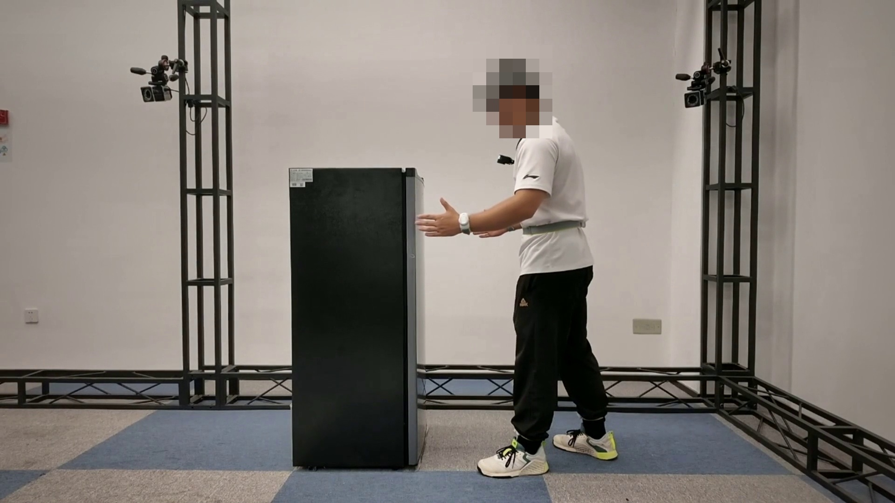
EgoHumanoid-V2: Human-to-Humanoid Transfer of Coordinated Whole-Body Skills for Loco-Manipulation
The first egocentric human-to-humanoid skill transfer framework for coordinated whole-body loco-manipulation
Highlights
- The first egocentric human-to-humanoid skill transfer framework for coordinated whole-body loco-manipulation.
- Coarse-to-fine action alignment combines kinematic reference correction with dynamics-aware refinement.
- Zero-shot skill transfer on four real-world tasks, with analyses of accuracy, policy scores, and collection cost.
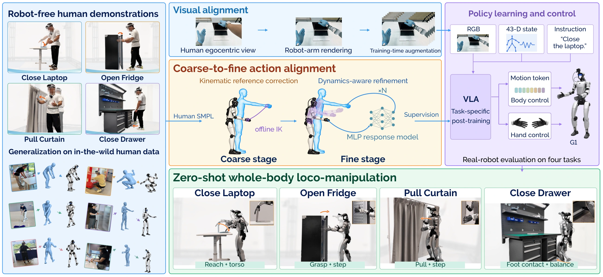
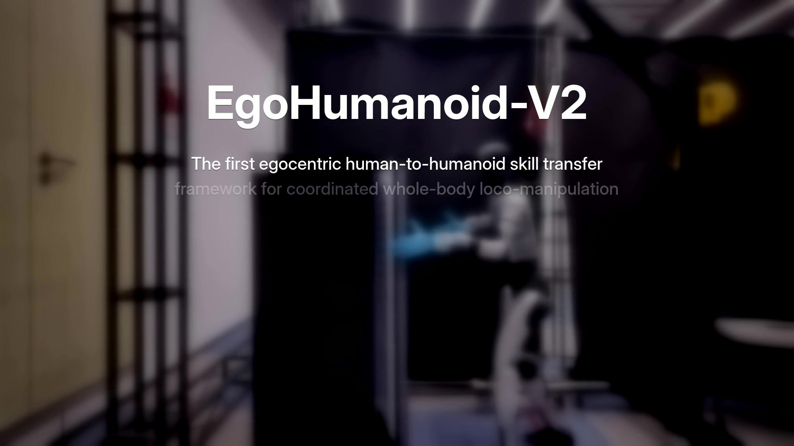
Results
Human Data Collection


Unaligned Data · Replay


Aligned Data · Inference


Scaling Human Demonstrations


Scores by demonstration budget
| Human demos / task | Laptop | Refrigerator | Curtain | Drawer |
|---|---|---|---|---|
| 25 | 35.00 | 21.67 | 40.00 | 56.67 |
| 50 | 31.67 | 33.33 | 38.33 | 36.67 |
| 100 | 48.33 | 28.33 | 50.00 | 53.33 |
| 200 | 53.33 | 38.33 | 53.33 | 61.67 |
Action Alignment
H: Initial SONIC rolloutK: Kinematic reference correctionD: Dynamics-aware refinement

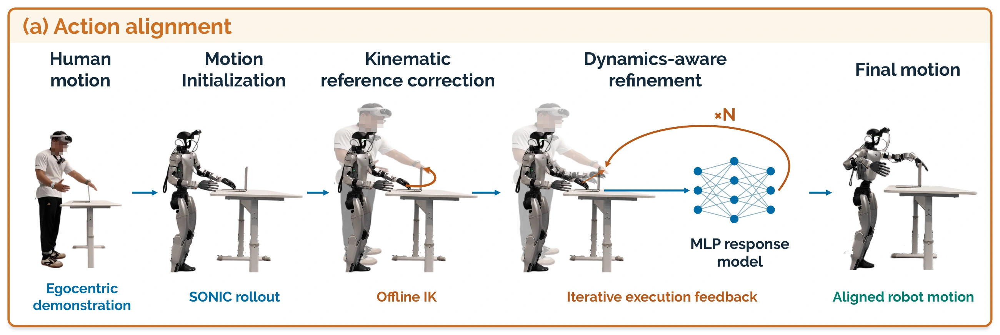
Mean task score21.25%
Position error11.21 cm
Orientation error21.22°
Real-world task score
Mean across four tasks · higher is better
Executed endpoint error
Simulation · lower is better
| Stage | Position (cm) | Orientation (°) |
|---|---|---|
| H | 11.21 | 21.22 |
| H + K | 4.45 | 13.77 |
| H + K + Ds | 3.41 | 6.71 |
Task scores
| Action alignment | Laptop | Refrigerator | Curtain | Drawer | Mean |
|---|---|---|---|---|---|
| H | 0.00 | 0.00 | 28.33 | 56.67 | 21.25 |
| H + K | 46.67 | 31.67 | 51.67 | 58.33 | 47.08 |
| H + K + Ds | 53.33 | 38.33 | 53.33 | 61.67 | 51.67 |
Visual Alignment
Close Laptop
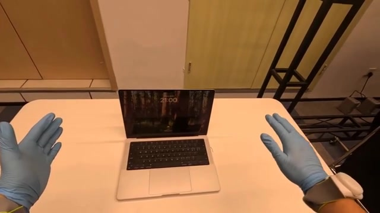
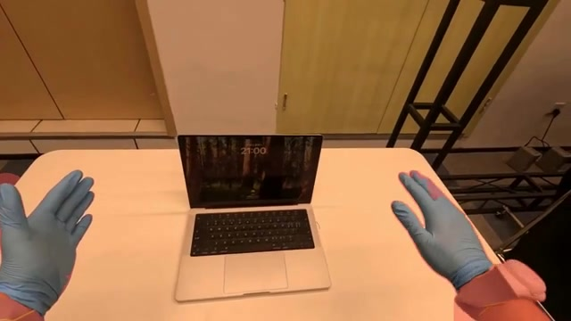
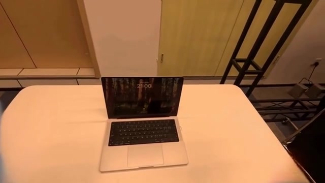
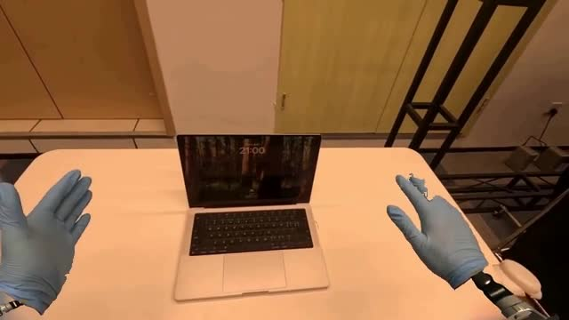
Open Fridge
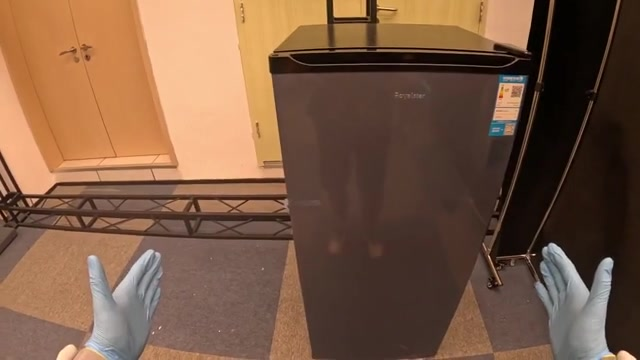
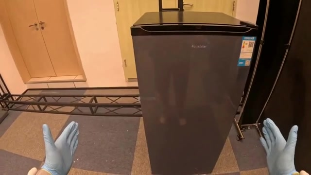
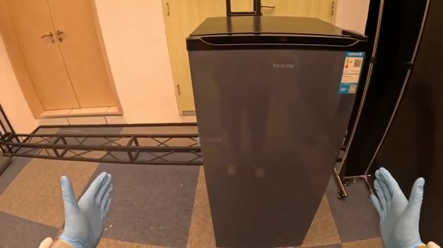
Pull Curtain
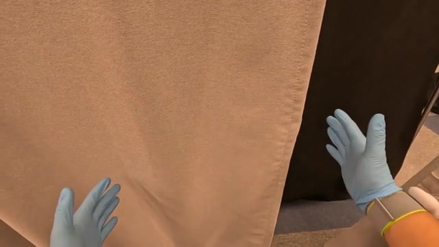
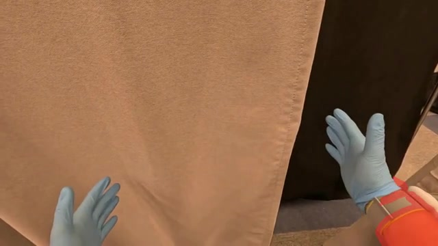
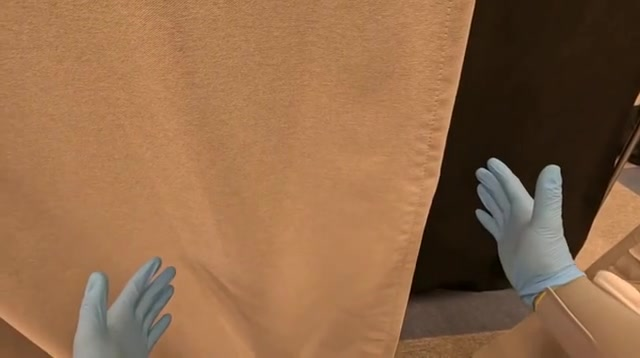
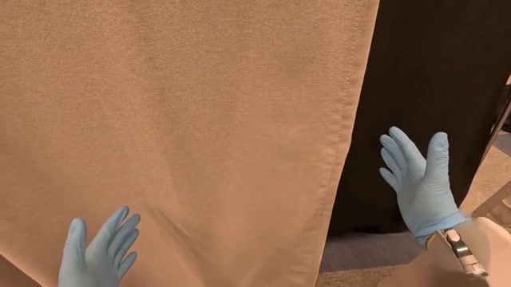
Visual alignment results
| Training images | Laptop | Refrigerator | Curtain | Drawer |
|---|---|---|---|---|
| Human RGB | 31.67 | 16.67 | 35.00 | 50.00 |
| + Arm rendering | 51.67 | 23.33 | 41.67 | — |
| + Augmentation | 61.67 | 33.33 | 33.33 | 61.67 |
| + Both | 53.33 | 38.33 | 53.33 | — |
Task scores with 200 human demonstrations. Arm rendering is not evaluated for foot-operated drawer closing.